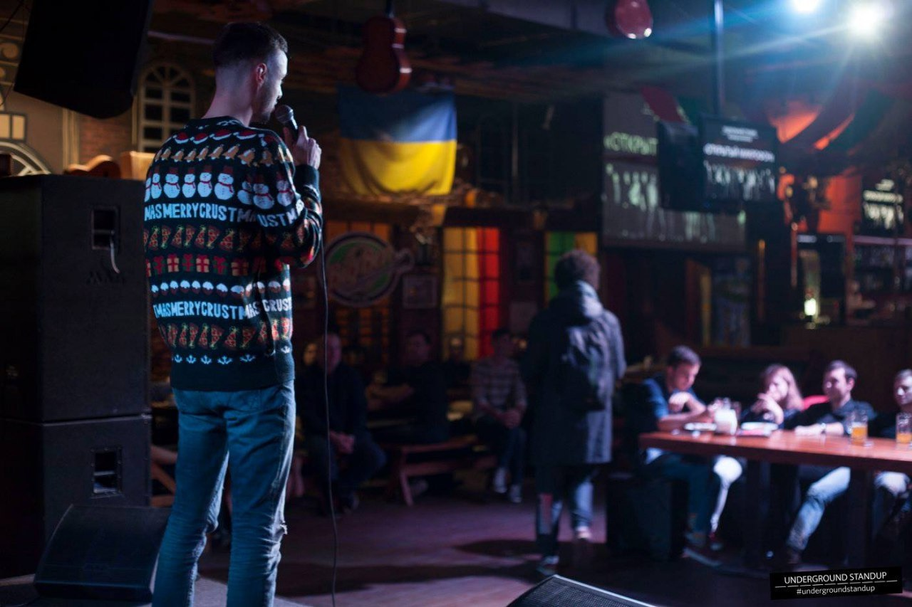

Через год Саша спросит меня, почему я не пошел воевать за свой Майдан. Я и сам толком не знал, что ответить; например, я ни разу в жизни не держал в руках оружие, на что он уверенно возразил, что это не проблема, “жить захочешь - научишься”. Сам же Саша пошел воевать за республику сразу после “референдума”, одним из первых, без тени сомнений. Мы контактировали какое-то время, я сильно скучал, у нас была связь, которую нечем было заменить, иногда я писал ему, когда напивался, но через пару лет перестал. Я не особенно осуждал его выбор, но не потому, что не все так однозначно; нет, просто иногда трудно брать на себя роль морального камертона, особенно, когда так хорошо знаешь чьи-то мотивы. Нас всех ведет воля случая, или, как утверждают буддисты, причинно-следственные связи.
Что касается “выбора” Саши, то мой друг был изуродован нищетой и тесной хрущевкой, в которой ему приходилось всю жизнь делить маленькую комнату со старшим братом; впрочем, мы все делили свои тесные комнаты с родственниками, не знаю, возможно он был изуродован чем-то еще, например, работой на шахте, которую он ненавидел, и считал безальтернативной, или службой в армии, после которой он вернулся слегка озверевшим.
И так далее, я мог бы написать целую трагедию о том, как токсичная среда постепенно превращает любителя Кафки в любителя Путина, но не в этот раз. Просто констатирую, что Саша возненавидел Кафку в себе, все чувственное, светлое и поэтическое мешало ему спускаться под землю, на проходку, общаться с волками, как он их называл, опытных шахтеров, вся эта чувствительность мешала ему бороться за выживание, поэтому он и решил стать на сторону силы; по крайней мере так ему казалось в моменте. Если быть до конца откровенным, то я даже немного завидовал его вере в рашизм. Быть атеистом сложно, если не веришь ни во что небесное, то нужно выбирать сторону на земле, сторону сильного или слабого, опрессора или жертвы, короче говоря, нужно выбирать место в этой бесконечной и бессмысленной войне, которую принято называть эволюцией.
В свои 23 я был политически безграмотным и вряд ли был готов отдавать свою жизнь “за майдан”, для меня выбор между Украиной и ДНР был очевидным с эстетической точки зрения, я выбирал сторону красивых и не понимал, что меня может объединять с людьми в бежевых рыбацких бриджах и кроссовках Abibas; они плохо пахли и слушали шансон, связать меня с этой прослойкой общества могла разве что любовь к начальству, но и тут наши пути тоже расходились.
В вечерней сводке новостей дикторы сообщили, что “хода за Україну закінчилася бійкою з сепаратистами”, тут же за работу взялись русские, они смонтировали ролики с нашего митинга и пустили по интернету с подписями “нацистский марш в Донецке”, “марш бандеровцев” и тд, где, помимо прочего, мелькал я, в футболке ВОЛЯ АБО СМЕРТЬ, среди размахивающего фаерами авангарда.
Уже на следующей день я побрил голову наголо, закинул в рюкзак пару пачек антидепрессантов, сел в автобус и поехал в сторону деревни “Красный Партизан”, на нашу фазенду, рай на земле, где не знающая усталости бабуля всегда обеспечит тебе абсолютно незаслуженным уровень комфорта.
В первую очередь меня интересовала безопасность; я чувствовал, что скоро начнется охота за недобитыми нацистами, и всех, кто попал на видео, рано или поздно идентифицируют и отправят на перевоспитание. Возможно, я преувеличивал, но то, что мы проиграли битву за Донецк, было очевидно. Гостинично-ресторанный бизнес вымер, сидеть без работы и ждать отправки на подвал я не хотел, мне нужно было сменить обстановку и подумать о будущем.
Приехав на дачу, я впал в анабиоз, без алкоголя мне постоянно хотелось спать, но уснуть я толком не мог, просто ворочался сутками на старом дачном матрасе. Мое “калифорнийское ракетное топливо” не заводило двигатель без спирта, казалось бы, отличный момент чтобы задуматься об эффективности такого лечения, лечебная схема, в которую нужно добавлять спирт, должна как минимум насторожить, но нет, я был слишком глуп и голоден до удовольствий; несколько дней подряд я почти не выходил комнаты, а когда бабуля начала переживать за мое здоровье, я не придумал ничего лучше, чем попросить у нее бутылку самогона. Конечно, Ромочка, есть пшеничный и смородиновый, могу еще абрикосовый поискать. Я выбрал поллитра смородинового, он был самым ароматным, точнее, все они были ароматными, но не все ароматы казались безопасными, поэтому я забрал смородиновое пойло, залитое в поллитровую бутылку из-под кока-колы и начал понемногу выбираться на свет божий.
Я сидел возле костра или гулял в окрестностях, вдоль пшеничных и подсолнуховых полей, или спускался ниже на луг к маленькой речушке Кривой Торец, где мы с братом выловили не одну сотню окуней; тут пастухи из деревни два раза в день пасли коров, все было усеяно их лепешками, вокруг летало несметное количество мошек, мух, оводов, но именно здесь прошло мое счастливое детство - мухи и коровьи лепешки отпугивали моего отца, он редко приезжал на дачу, считая ее недостаточно интеллигентной для такого тонко чувствующего филолога, каждый раз, приезжая на дачу, он возмущался и ставил в пример Румынию, где у его родственников на дачах нет ни мух, ни лепешек, все дома накрыты не шифером, а благородной черепицей, люди там отдыхают, а не горбатятся в огороде и так далее и тому подобное. Бабушка и дедушка молча слушали его нытье, фантастический уровень самоконтроля! Они знали, что он занимается домашним насилием, пьет чаще, чем нормальные люди, а в какой-то момент пустится в неудачную финансовую авантюру и обречет всю семью на вечную жизнь в съемных квартирах; и все это с умным видом, никакого раскаяния, только злость и недовольство мухами на даче, с любовью построенной дедушкиными руками. В общем, приезжал он туда нечасто, так что у меня выпадала редкая возможность прожить летние каникулы без его истерик.
Заседая во дворе за смородиновым самогоном я фантазировал о том, как вступлю в батальон “Донбасс” и буду уничтожать сепаратистов вместе со славным Семеном Семенченко. Я не очень понимал, как туда попасть, не очень верил, что меня, без опыта службы, возьмут, и вообще, не хотел ехать туда один. Друзья мои не отличались воинственностью, с друзьями мне повезло - сплошная рассудительность и адекватность, они даже пили неохотно, вечно мне приходилось их уговаривать, - единственным, на чьё сумасшествие я мог рассчитывать, был мой брат; через неделю он привез мне пару пакетов мяса для мангала, мы молча сидели возле огня, пили самогон, и когда я показал ему подборку видео с Семенченко, то увидел в его глазах тот азарт, с которым он обычно решался на глупости.
Мы прожили бурное детство, нас объединяли шрамы от падений с велосипедов, битье окон, уличные разборки и прочее мелкое хулиганство, так что попасть с ним на фронтир казалось мне самым логичным продолжением братской любви; но азарт его был мимолетным, глаза быстро потухли, или точнее, протрезвели. Брат уже успел повзрослеть, стать циничнее, и пока я за баром взбивал молочные коктейли, он ходил по кабинетам городской администрации и организовывал международные спортивные мероприятия, управлял большими процессами, и даже лелеял надежду на то, что настоящей войны не будет и он продолжит заниматься своими делами.
На следующий день брат вернулся в Донецк, а я продолжил сидеть возле мангала и ковырять угли длинным железным прутом, подливая себе в рюмку самогон; очевидно, что пришло время двигаться дальше, принимать решение, но я чего-то ждал, мне нужен был какой-то толчок, знак свыше, нет, не знак, глупости, какой еще знак? Вдохновение, вот в чем я действительно нуждался. Люди делятся на тех, кто не нуждается во вдохновении, и на тех, кто ищет его даже в самогоне. Бабуля относилась к первой категории лиц - она просыпалась на рассвете и копала, подвязывала, сеяла, носила и поливала до самого заката, каждый день, без выходных, без отпусков, без больничных, господи, да он даже телевизор не смотрела, откуда у одного человека может быть столько воли? Вот где кроется настоящее неравенство, в желании жить, пока живой, ну или по крайней мере действовать, видеть смысл во всех этих помидорах.
Примерно так я размышлял, бесцельно сидя на скамейке во дворе, под тенью бунгало; бабуля проходила мимо, кинула ироничный взгляд на полупустую бутылку и покачала головой: “ты уже прям как папочка…”.
Так я и получил свое долгожданное вдохновение, как удар палкой по макушке от дзен-учителя. Конечно, я разозлился, разве можно критиковать внука, сбившегося с пути? На даче я не ждал ничего, кроме безусловной любви и принятия, поэтому такой комментарий застал меня врасплох, но она была права, поэтому я и обиделся; ждать непонятно чего, бездельничать, наливаясь синькой, пока вокруг тебя суетится трудолюбивая женщина - это действительно папочкин стиль.
Я резво собрался, как и полагается обиженному, но было еще одно дело, на которое я не решался, дело сомнительное, но интересное - пару недель назад я купил в интернете семена конопли, сорт Tutankhamon, этот аутдор гибрид с преобладанием сативы (60%) и небольшим добавлением индики (40%) является настоящим фаворитом среди любителей марихуаны, обеспечивая не только мощный психоактивный эффект, но и впечатляющий урожай.
Задумка была в том, чтобы в конце лета собрать добротную жменю шишек и продать знакомому планокуру, дешевле рынка, я знал, почем он брал у барыг, и главное, как часто он брал, поэтому сделка состоялась бы без труда, сам-то я не курил, ну ладно, бывало и курил, но трава натурально сводила меня с ума; став старше я полюблю эти приключения, научусь извлекать из них пользу, что сделать, на самом деле, не так-то и сложно, просто нужно поменять двухлитровую бутылку с колпаком на маленькую трубку, да, два литра дыма за один вдох кого угодно сведут с ума, если ты не прожег себе мозги в студенческих общагах, то такая дозировка не несет в себе никакой радости; короче, курить я свои будущие шишки не собирался, на тот момент меня интересовала только коммерческая составляющая куста.
Сначала я думал посадить его втихую и даже не говорить бабуле, места для кустов у было предостаточно, кроме нашего огорода на несколько соток бабушка окучивала еще и соседские, так сказать, заброшенные, ну и не только, кто-то платил ей пару копеек за услуги, а почему нет, большинству пенсионеров было лень вкалывать под палящим солнцем, короче, я думал закинуть семена под чьим-то абрикосом и пусть себе растет на дождевой воде, сорт outdoor предполагал живучесть и неприхотливость; но, на самом деле, в этом не было никакой нужды, что-то подсказывало мне, что нужно действовать в открытую.
Бабушка выслушала мой коммерческий план с улыбкой и без возражений, у нее не было времени учить меня жизни, да и зачем, очевидно, что гены взяли свое, папочкины наклонности одержали верх; она забрала семена и положила их на мокрую марлю, сказала, что перед тем как кидать их в землю, они должны прорасти, а так без проблем, посажу тут вдоль дорожки, никто не заметит.
Через неделю начался массовый исход людей из Донецка, я был частью массовки; удивительное дело, когда все, кого ты знаешь, едут в одну сторону чуть ли не одним вагоном, десятки людей, друзья, одноклассники, однокурсники, знакомые, знакомые знакомых. На вечерний променад не всегда получается договориться, а тут - давайте-ка завтра поедем все в Киев и будем там снимать квартиры следующие двадцать лет, отличная идея, давайте, да, заезд в город Стрелкова со своими мотороллами произвел на людей потрясающее впечатление.
В Киеве нас никто не ждал, и найти квартиру с донецкой пропиской было тем еще приключением, не все хотели селить “донецких”, конечно, это задевало, особенно понимая, что те “донецкие”, которых они боялись, в Киев не собирались, они либо оставались в народной республике, либо ехали в другую сторону, на восток; отъявленных ватников среди переселенцев было немного.
Сначала мы сняли временное жилье и въехали туда большой компанией, потом разбились по парам и начали искать отдельные квартиры; ну, я, конечно, ничего не искал, этим занимались более ответственные люди, первым делом я начал искать, где бы мне выступить со стендапом и с кем бы мне выпить водки. В общем, к взрослой жизни я был не готов.
Пока шли поиски квартиры, в Киев стягивалось все больше знакомых, и вот, нас уже шестеро; после череды встреч с риелторами, которые я слабо помню, так как начинал пить я с самого утра, я, Леша, и Макс, чьи личностные характеристики я постараюсь описать позже, оказались на бульваре Леси Украинки 7, в двухкомнатной квартире с проходной комнатой.
Через несколько дней к нам заселился еще один беженец, Ярик, который не смог найти себе жилье, потом к нам заехала Алена, подруга Фрола, потом к нам подселился мой брат, у него были какие-то дела в министерстве спорта, он привез из Донецка литр бабушкина самого и мы ушли с ним в феноменальный запой, параллельно я искал работу за баром и уже нашел себе место в караоке-баре на Бассейной; я выходил в ночные смены, а днем пил, это было абсолютное сумасшествие, мы спали по двое на одной кровати, спали на полу, спали по очереди. Леша, при этом, пытался работать в проходной комнате, он перевез с собой стационарный компьютер с монитором и не мог просто пойти в кофейню, прихватив с собой ноутбук, ноутбука у него не было, ему приходилось заниматься веб-дизайном в компании пьяных идиотов.
Ярик тоже пил пивко, а что еще делать без работы, в какой-то момент пить начали все, в один из вечеров Леша плюнул на свой дизайн, я достал микрофон, подключил к компьютеру, и мы записали рэп-фристайл, каждый зачитал по куплету про новую жизнь в Киеве, про гастроном, в котором мы брали пиво и пельмени, а также про губительное влияние русского мира, который лишил нас дома. Так и закончился этот жаркий июнь.
Я, кстати, не забыл про свой стендап, где-то в перерывах между рюмками и работой мне удалось найти один открытый микрофон, он проходил в зале КПИ, все было очень торжественно, там было аж 13 комиков и настоящий ведущий, очевидно, КВНщик, но что поделаешь, он встретил меня тепло и поставил в середину списка; зал был пустоватым, но пару десятков студентов набралось, я сильно нервничал, еще за час до выступления я запил коньяком две таблетки Гидазепама, мы с группой поддержки устроились на заднем ряду; начинающие комики шутили неважно, но зал был теплым, студенты, конечно, не смеялись, зато они аплодировали, чтоб не смущать артистов-бедолаг мертвой тишиной. К моменту моего выхода я высосал полбутылки Старого Кахети, часть пролилась мне на брюки, меня капитально развезло, я еле-еле доплелся до сцены и уселся на край, спустив ноги перед переднем рядом. “Простите ребят, я посижу тут, чтоб вы не видели мое пятно на штанах”, начал я, и сразу услышал смех, наконец-то на сцену вышел настоящий клоун, короче, выступление прошло хорошо, мне пришлось встать чтобы показать миниатюру “секс под рекламу”, у всех сложилось впечатление, что я очень уверенный, опытный комик, и на финальном голосовании я занял первое место. Ведущий вручил мне белую футболку с принтом Дарт Вейдера, причем тут Дарт Вейдер, я не понял, футболка мне не понравилась, но я надел ее вместо своей пропотевшей от стресса кофты и в тот же вечер благополучно залил остатками коньяка.
В июле все немного устаканилось, в квартире осталось трое - я, Леша, и Макс. Парни, наконец, выдохнули, Леша для счастья нужна была тишина, а Максу - марихуана, так что в квартире остался только один алкоголик, но я редко бывал дома; после хаотичных попыток поработать в центральных забегаловках, брат позвонил знакомому шеф-повару и устроил меня в хороший ресторан на Осокорках.
Следующий месяц можно смело назвать психологическим рабством, старший бармен Юра манипулировал мной как ребенком, которого недолюбили, и я, как и следует жертве абьюза, был этому только рад. Всю свою жизнь я бунтовал против авторитетов, хамил учителям, дрался со старшими, да что там, неделю назад я вытащил свою зарплату из кассы караоке-бара и молча ушел домой, после того как мне нахамила начальница, но Юра нашел ко мне ключики, он действовал тонко, без грубости, для полного контроля достаточно было вызвать во мне чувства стыда.
Небольшого роста, широкий, коренастый, с большими руками, короче, орангутанг, но харизматичный, альфа-орангутанг, чем-то он напоминал мне Адриано Челентано, или, скорее, следователя из районного РОВД, который чуть не расколол меня однажды на допросе; короче говоря, я его боялся.
С самого начала Юра дал понять, что я ничего не умею и не гожусь для такого солидного заведения. Ну, то, что я не умел правильно взбивать пену для капучино, было близко к истине, но критике подвергалось буквально все, под его осуждающим взглядом я боялся неправильно налить пиво или заварить пакетированный чай.
Я был готов учиться и с покорностью принимал критику, но, самое главное для Юры, я был безотказным. Если ему нужно было пойти после обеда на свидание, то он звонил мне в мой выходной и я тут же прилетал подменить его на полсмены, если в свой выходной он выпивал лишнего и чувствовал, что завтра ему не встать, то он звонил мне пьяный среди ночи, и просил подменять его утром. Просил он вяленько, невзначай, как будто подменять его совсем не обязательно, да, он действительно нашел ко мне ключик, но, справедливости ради, мне нужны были деньги и я не имел возможности выжить в Киеве без дополнительных смен. Делал он это довольно часто, полных выходных у меня практически не было, я с горем пополам записался на еще один открытый микрофон и заранее предупредил Юру, что в этот вечер буду занят, но он все равно позвонил днем и попросил выйти, с большим трудом я отказался, первый и последний раз, так как услышал в его голосе разочарование. О нет, вина и стыд, вина и стыд! Выступил я в тот день отвратительно, в полную тишину, действо проходило в каком-то пафосном прокуренном баре на Шота Руставели, почему-то днем, без зрителей. Я выбежал на улицу несчастным и сразу же решил закончить со стендапом.
Мне нравилось работать за баром и нравился ресторан, светлый, уютный зал, в основном все пили вино, закусывали сыром и брусскетами; хозяйка заведения, Татьяна Владимировна, ездила на черном Мерседесе, я хорошо запомнил этот компактный джип, ну, может и не Мерседес, память штука ненадежная, особенно, если ты не трезвеешь, но это точно был джип, черный джип, я должен был запомнить хоть что-то, так как позже много фантазировал о том, как кину в него коктейль Молотова.
Гости ресторана тоже приезжали на джипах, они-то уж точно были черными, и люди и джипы, на них приезжали менты, прокуроры, бандиты, серьезный люди, но не только они, был, так сказать, и шоу-бизнес, каждые выходные у нас отдыхал лысый из квартала, я никогда не смотрел подобные шоу, КВН, как вы помните, в нашем семействе был под запретом; короче, мне было плевать, кто к нам приезжал, но лысый вел себя культурно и своим присутствием вселял гордость в работников зала, им доставляло удовольствие обслуживать человека из телевизора.
Юра читал мне лекции про отличия итальянских регионов, показывал, как определить качественное вино по этикетке, “в вине надо разбираться, в ресторан с телкой придешь, покажешь, что шаришь - она потечет”. Что касается остальных сотрудников, то тут, как везде, находились и союзники и антагонисты; с дебилами я никогда не умел находить общий язык, так повелось еще со школы. Официант Эдик, например, был поклонником Юры, он пытался ему угодить, поэтому сразу начал надо мной подшучивать, называть сепаратистом, ну и конечно же критиковать мои напитки в отсутствии старшего. Однажды на курилке мне даже пришлось применить насилие, Эдик вкрай меня выбесил, он придумал какой-то идиотский пранк с вымышленным заказом, который я якобы забыл отдать, в общем, пора было остановить эти статусные игры. Кажется, я попал ему в плечо и нас быстро разняли, но сигнал до него дошел, он успокоился; да, такова жизнь, никакой коммунизм нам не светит.
С остальными самцами проблем не возникло, например, официант Илюха был образцовым хипстером, дружелюбным и открытым, даже чересчур, у тех кто вырос на Донбассе такая дружелюбность вызывает подозрение. Однажды, уже под конец смены, к нам пришел пить водку местный мафиози; расположился он основательно и пил не спеша, кухня уже закрылась, все разошлись по домам, администратор выключил музыку и нежно напомнил гостю, что мы закрываемся, но он пропустил это мимо ушей, трудовой кодекс волновал его еще меньше, чем криминальный. В зале остались только я и Илюха, мы скучали, в надежде на чаевые, я подливал себе из графина сангрию, недопитую кем-то из гостей. Наконец, мафиози подал знак Илюхе, попросил его сесть рядом и начал что-то втолковывать, тот оживленно кивал, “без проблем, без проблем”, потом встал, снял фартук, загадочно улыбнулся и сказал, что вернется через пятнадцать минут.
Как оказалось, Илюха был отправлен за шишками, одна из которых досталась нам вместо чаевых - фантастический душистый плод, с желтыми и фиолетовыми прожилками, настоящее сокровище, вот ради чего люди становятся криминальными авторитетами. Когда я приехал домой и презентовал свой улов Максу, тот пришел в абсолютный экстаз, так радуются дети игрушкам, он уже вторую неделю не мог найти траву, без травы он очень плохо спал, поломанный скрипящий диван тоже не добавлял спокойствия, а еще безуспешные поиски работы, в общем, иногда Сансара выдает нам свои пряники, чтобы мы окончательно не слетели с катушек.
В августе все шло довольно неплохо, Юра взял отпуск и улетел в Италию, куда же еще, мистер красное вино, ему бы больше подошла Албания, но я немного выдохнул, зная, что мой главный критик далеко, без критики жизнь обретает совершенно другие качества, становится сладкой и пьянящей, как консервированный персик с Просекко и двумя кубиками льда, перемолотые в блендеры до однородной массы.
Кроме того, в августе с гостинцами приехала мама, она привезла бедным голодным детям тонны консервов, золото с бабушкиных плантаций, как говорится, чистая органика, теперь мне было чем закусывать, а сосед был обеспечен куревом на несколько месяцев вперед; мои семена Tutankhamon не дали больших плодов, но, тем не менее, один куст вырос на добрых 50 сантиметров, мать срезала его, завернула в одеяло и провезла через все блокпосты, не моргнув глазом. Она выложила куст на кухонный стол, обыденно, не осознавая масштаб события, просто положила сто грамм марихуаны между банками с маринованными огурцами и пошла мыть посуду. Макс потерял дар речи, он убежал в зал, потом вернулся, возбужденный, размахивая руками, “дядечка, это развал, что происходит?”, он начал смеяться, еще немного и дело бы дошло до истерики, да, такой сцены не увидишь в сериале Friends, моя мама была сумасшедшей, по-хорошему, конечно, как и все мы, кучка психов, собранных под одной крышей, в тесной двушке на Бульваре Леси 7/45.
В сентябре Юра не досчитал мне в зарплату девять смен, девять - это не три, такое не могло произойти случайно, конечно, он знал, что я замечу отсутствия половины зарплаты, почти весь август я работал без выходных, пока он исследовал Сицилию и киевские бары; расчет был на то, что я побоюсь ему об этом сказать, но тут он меня недооценил - все-таки, деньги мне нужны были немного больше, чем его одобрение. Когда я показал Юре календарь с зачеркнутыми днями, он удивленно развел руками, “Да, Ромчик, базару ноль, пересчитаю, ты думаешь я тебя наебать хочу?”, ну, нет, не наебать, скорее выебать. Прошла неделя и он все еще продолжал пересчитывать, каков хитрец.
В ту пятницу мы готовились к большому корпоративу - после обеда заведение должно было закрыться для обычных посетителей, кто-то из официантов сказал, что гулять будут менты, какие менты - непонятно, вряд ли обычные патрульные арендовали бы итальянский ресторан, не самый дешевый; наверное, гулять собирались начальники, кто его знает, никто не доносит такую информацию до обслуживающего персонала, но нам дали понять, что люди будут серьезные; мне следовало отнестись к этой информации внимательнее, но я летал в облаках, точнее в тучах, те жалкие копейки, которые я получил за август, сразу ушли на аренду квартиры, осталось пару гривен и полное горло обиды, постепенно переходящее в злость.
Утром в ресторан приехал один из ментов и вручил мне пакеты с алкоголем - там были три литровые бутылки Finlandia и пять бутылок Prosecco, еще какое-то белое сухое, как будто нельзя было купить его у нас, жлобье, ну да ладно, моей задачей было охладить все празднику и выдавать бутылки официантам по мере распития; я сразу же засунул водку в ледогенератор, вино отправилось в специальный холодильник, а мент, видимо, в порыве благодарности, заверил меня, что если вечером они не успеют что-то выпить, то я, без зазрения совести, могу забрать остатки себе.
Сказано - сделано, пили они не особенно активно, так что литр финки отправился ко мне в рюкзак тем же вечером; этот скромный подарок судьбы был как никогда кстати. Кому шишки, кому водка, счастье всем и даром, я буянил на кухне до рассвета, снимал стресс, заливал горечь и все такое, впереди у меня было аж два выходных; а утром позвонил Юра, я уже автоматически начал искать джинсы, чтобы нестись на Осокорки, но нет, недовольным тоном он сообщил, что мент приехал за остатками бухла и не досчитался целого литра финки, о ужас, Татьяна Владимировна рвет и мечет; на мои возражения он ответил, что ментам верить нельзя, что я его подставил, так дела не делаются, короче говоря, Юре выпала идеальная возможность кинуть меня еще и на сентябрьскую зарплату.
Некоторые философы любят спорить о том, какой человек на самом деле, чего в нем больше, добра или зла, хотя совершенно очевидно, что человек добр к тому, кого он считает человеком, на всех остальных ему глубоко насрать; если бы я был племянником Татьяны Владимировны или хотя бы собутыльником Юры, то мог бы рассчитывать на человеческое отношение, но увы, никто не собирался тратить на меня свою драгоценную доброту, или понимание, я был уволен в то же утро без какой-либо компенсации.
Несколько дней я практически не выходил из спальни, вся усталость, все бесконечные смены, все неудачи и обиды на мир крепко придавили меня к кровати; Макс разводил руками, “мужчина, так нельзя, у тебя пролежни будут”, Леха деликатно интересовался, все ли у меня хорошо, а я мечтал о мести, мечтал о том, как ограблю ресторан, как спалю ее джип, можно вместе с ней, говорят, что такие фантазии - это первый шаг на пути к настоящему преступлению, кто знает, лучше уже так, чем в петлю; если бы я направил всю эту ненависть на себя, то могло случиться всякое, жили мы высокого, и спрыгнуть с балкона всегда казалось мне предпочтительнее повешения.
Не менее обидным мне казалось то, что ради всего этого унижения я забросил творчество, единственное, ради чего в жизни стоит страдать; я забросил стендап, я мог бы унижаться на сцене и получать взамен драгоценный опыт, нарабатывать материал, собирать любовь фанаток, тьфу, а теперь ни денег, ни шуток, ни желания жить, пожалейте меня, люди добрые, этот раунд я проиграл всухую.
А возвращение на сцену началось с Насти, да, пожалуй, что с Насти. Зимой две тысячи семнадцатого я совершил карьерный скачок и перешел с позиции бармена на позицию копирайтера, что со стороны может показаться совершенно обыденным событием; люди не верят в чудеса просто потому, что не замечают их. Более прозорливые могут заметить в таких событиях удачу, но нет, я снял забрызганный пивом фартук и уселся в самом богатом бизнес-центре Киева не просто так. Рядом с рабочим столом росла огромная монстера, за окном красовался оперный театр, люди вокруг хорошо пахли, не называли меня сепаратистом даже в шутку, а зарплату давали в долларах; в общем, я чувствовал божественное вмешательство.
Моя новая контора предоставляла не вполне легальные услуги, рынок онлайн-покера не имел солидного лобби в Верховной Раде, поэтому никто не заморачивался регуляцией нашей деятельности. В связи с нелегальностью предоставляемых услуг, операционный директор заставлял нас каждый день забирать рабочие ноутбуки с собой, каждый божий день он ожидал облавы от СБУ и не хотел, чтобы какой-то компромат попал в их руки. Старослужащие говорили, что однажды такая облава уже была, прямо здесь, в этих кабинетах, что и служило поводом для паранойи начальства.
Хотя, как по мне, это должно было наоборот успокаивать, ведь контора продолжала деятельность в том же офисе 0 значит, наши хозяева договорились со спецслужбами; к тому же, все наши ноутбуки были зашифрованы, и зашифрованы надежно, ведь «функция шифрования диска BitLocker позволяет уберечь ваши данные в случае утери компьютера…»; короче, паранойя явно была излишней, но именно из-за нее я и вернулся в мир комедии, пусть и не сразу.
В ту пятницу Леха отмечал свой День рождения, тридцать лет, серьезная дата, ему надоели домашние посиделки, которые каждый раз заканчивались спорами о природе вещей и прочей тухлятиной, поэтому он решил арендовать бар с диджейским пультом, куда позвал приятелей из творческих кругов. Я прекрасно понимал, что будь его воля, он бы не звал в эту компанию нас, близких друзей, мы были слишком диковаты; не то, чтобы мы слушали шансон или агитировали за Януковича, просто последние пять лет мы варились в собственном соку, шутили свои шутки и перекрикивали друг друга в спорах; в общем, мы явно не умели держаться в культурном обществе, ну, я-то, по крайней мере, точно не умел.
Я отслужил свой день в конторе, положил ноутбук в рюкзак и отправился в бар Гнездо - милое заведение на самом верху Андреевского спуска, с шикарном видом на обрыв, - где меня встретил Леха и усадил за стол к диджею 33, он же Дима.
Прошло уже больше года, как я отказался от “калифорнийского ракетного топлива”, новый психиатр выписал мне много разных гадостей, но в основном я ограничивался снотворными. Алкоголь больше не превращал меня в весельчака, скорее наоборот, я становился агрессивным, вся злость и обиды лезли наружу, поэтому я в целом старался пить пореже.
Дима стал моей первой жертвой, после бессонной ночи и напряженного рабочего дня я быстро захмелел от виски и начал рассказывать ему про своих любимых хип-хоп исполнителей, доказывать, кто из рэперов является самым лучшим; он быстро вычислил психопата и кивал головой, ожидая удобного случая слинять за другой столик.
Все, что было дальше, я помню урывками; старший брат Лехи стал за диджейский пульт, люди пошли в пляс; я, конечно же, остался за столом, ведь каждому нормальному пацану, к которым я тогда еще имел честь себя относить, известно, что мужики не танцуют. Я уговорил Леху выпить со мной водки, он тоже поймал кураж и принял мои предложение; не успели мы выпить, как я озвучил свою старую обиду на то, что в прошлом году он пообещал отредактировать мою повесть и проморозился. Кажется, я даже назвал его пидором, но тут же переключился на комплименты: я напомнил ему о том, какой он мне братан, и что работа дизайнером - это, конечно, хорошо, но ему тоже нужно начинать писать, писать о своем детстве, у него была удивительная память на детали, и чувство юмора, и отличный вкус в литературе; в общем, я включил режим советника. Леха застенчиво улыбнулся в ответ и ушел танцевать, а я уселся за пустой столик у окна, резко помрачнел и начал думать о смерти, как это обычно у меня бывает.
Я понимал, что мне пора сваливать, мне пора прощаться, выходить на мороз и идти домой, в свою убогую коммуналку, где меня поджидает такой же мрачный сосед по комнате с бутылкой перцовки и рассказом о том, как все неправильно устроено в его жизни; в общем, я не мог решиться на такой смелый поступок - в этот вечер, к несчастью Лехи и его друзей, я решил играть до конца.
Мои суицидальные мысли прервала Аня, милая, жизнерадостная Аня, начинающая певица, или не начинающая, я ничего о ней не знал, кроме того, что у нее есть клип, где она танцует в декольте на фоне лопающихся шариков, а может, и не шариков, я запомнил только декольте, и не успела она открыть рот, как я накинулся на нее с критикой. “Ты занимаешься творчеством, или эротикой?”. Аня, конечно, не ожидала подобного финта; наверное, она увидела мрачного паренька, какого-то друга Леши, одинокого, со стаканом виски, и решила поднять ему настроение, поболтать о том о сем, зарядить своей энергией. В общем, я нанес удар исподтишка, она не на шутку разозлилась, так часто бывает с выпившими людьми, напоровшимися на неожиданное хамство. Она долго и эмоционально говорила; кажется, она рассказывала о своей непростой судьбе, и о том, что она профессиональный музыкант с отличным образованием, что она хорошо играет на фортепиано, помогает матери, и так далее, так что я не имею права ставить ее в один ряд с безмозглыми декольте-певицами. Я сидел с каменными лицом и слушал вполуха, тупое, пьяное животное, меня уже не интересовали люди с их историями, тем более, что она была девушкой брата Лехи, а меня в принципе не интересовали чужие девушки; в тот вечер я заслужил, как минимум, сломанной челюсти, но компания была культурной, поэтому на следующее утро я проснулся без единой царапины, потеряв по ходу действа рюкзак с рабочим ноутбуком.
Я проснулся на рассвете; сон алкоголика, как известно, краток, особенно сон алкоголика в промерзшей коммуналке. Несмотря на дореволюционные потолки высотой в четыре с чем-то метра, я сразу почувствовал перегар, здесь, на дне комнаты, скопились ядовитые выхлопы; я не мог в одиночку провонять целую залу, для таких мощностей нужен был помощник. Сосед тихо похрапывал в углу, на тумбе возле его кровати стояла недопитая литрушка “Чернігівське Біле”, еще две пустые валялись рядом на полу. Наверняка, он приговорил и перцовку, которую мы начали в четверг; что еще ему оставалось делать, зимой, в чужом городе, без четких карьерных планов на будущее.
Гугл подсказал, что бар “Гнездо” открывается в полдень, через шесть часов. У меня не было шансов уснуть еще раз, я заставил себя встать, сходил в туалет и попил воды из чайника. Меня не мутило от вчерашнего, точнее, физически не мутило, я не успел протрезветь за эти четыре-пять часов сна, похмелье еще не наступило, но припомнив то, что я вчера чудил, меня накрыло волной такого жгучего стыда, что я даже прикусил кулак и полез в шкаф за перцовкой. Интуиция меня не подвела, в шкафу было пусто, то есть, не пусто, там стояли консервы, домашние консервы, которые регулярно отправлялся мать соседа из Доброполья, шахтерского городка, чудом устоявшегося под напором народного ополчения Донбасса; но консервы меня сейчас интересовали только в качестве закуски, поэтому я просто вернулся в свою кровать и принял позу эмбриона.
Через пару часов сосед проснулся, еще никогда я не был так рад его пробуждению; обменявшись тяжелыми вздохами, мы тут же включились в беседу, с перепоя люди добры и общительны, ну, только первое время, ближе к обеду все становится на свои места. В общем, я вывалил ему короткий пересказ своих приключений, он хохотал, как хохочут отчаявшиеся люди, они не улыбаются и не хихикают, они либо грустят, либо орут, как будто выпускают все подавленное веселье разом. Когда я добрался до факта утери ноутбука, он уже не хохотал, но и не сочувствовал; просто покачал головой и сказал Рома-Рома, как же так, ну ты даешь, думать же надо. Вполне ожидаемо, сочувствие - это роскошь, которую могут себе позволить только довольные жизнью индивиды. Мой сосед был не из этой когорты, возможно, он мне даже завидовал, ведь у меня была работа в приличной конторе, с окладом в долларах; пусть и смешным, учитывая мой нулевый стаж копирайтера и испытательной срок, но, тем не менее, фиксированным окладом. Он же ходил по квартирам и пытался продать кондиционеры, зимой, кто покупает кондиционеры зимой? Не говоря уже о том, что путешествовать весь день по морозу в принципе губительно для самооценки.
Сосед предложил мне покурить, почти каждый день он начинал с баночки; обычно, ты либо алкаш, либо планокур, но он совмещал в себе обе роли, таковы последствия пяти лет жизни в общаге. Я отказался от баночки и просто ждал, когда часы покажут 9:00, чтобы выйти в ближайший магазин за чем-то крепким; не то, чтобы я слишком переживал за ноутбук, в свои двадцать шесть я начал исповедовать путь самурая, и быстро смирился с вероятной потерей работы; подумаешь, потерял еще одну работу, нас все равно всех съедят опарыши, но вот стыд за вчерашнее поведение сдавливал мне грудную клетку. Я не дышал, а пыхтел, потому что стыд для самурая - это смертельный приговор, который я не был готов привести в исполнении этим утром.
Сосед накормил меня пельменями и отбил желание идти за бутылкой, так что я отправился в бар “Гнездо” уже протрезвевшим. Можно было просто позвонить и поинтересоваться про утерянный рюкзак, но я хотел осмотреть помещение своими глазами, залезть под каждый стул, тем более, если они его нашли, то мне все равно придется ехать, лучше уже не тянуть. Всю ночь падал снег, я с трудом продирался сквозь сугробы по Андреевскому спуску, будь проклята эта зима, этот спуск и этот ноутбук; стыд отошел на задний план, теперь доминировала тошнота, тошнота и ненависть, ненависть к себе, я ненавидел себя всем сердцем, что еще мне оставалось делать.
Я достиг цели чуть раньше полудня, ребята готовились к рабочей смене, заспанный бармен отвлекся от промывки кофемашины и бросил на меня удивленный взгляд, “мы еще закрыты”. Я быстро объяснил в чем дело, кажется, он узнал мою физиономию, сдержанно кивнул и ответил, что они ничего не находили, но сейчас еще уточнит у официантки, подожди минуту, нет, ничего не находили, камера у нас только одна, на баре, мы не можем посмотреть, что происходило в той части зала.
Он предложил оставить свой номер телефона, мало ли, на всякий случай; я не услышал в его голосе никакой надежды, да и на что тут надеяться, как будто кто-то случайно забрал чужой рюкзак и теперь потащит его назад по сугробам на вершину Андреевского. Нет, это вряд ли, скорее всего его украли, или я оставил его в метро, и теперь какой-то мудила пытается понять, что делать с зашифрованным ноутбуком.
Бармен сжалился и предложил кофе за счет заведения, “мне бы чего-то покрепче”, пробухтел я. “Без проблем, со вчера осталось немного вискаря”. Я попросил налить в рюмку, бармен повел бровью, но не стал сопротивляться, не хватало мне сейчас еще лекции о правильной подаче алкоголя, я сам кому хочешь расскажу про эту подачу, как-никак, три года за стойкой; просто сейчас мне нужна была рюмка, желательно с водкой, но на халяву сгодится и вискарь.
Осушив стопку, я поблагодарил бармена и вышел вон, в неизвестность, хотя с сегодняшним днем все было понятно, я продолжу бухать, ебись оно всё горько в зад, как говорят шахтеры Донбасса, главный вопрос в том, где и с кем.
Добравшись до метро “Контрактова площа”, я закурил и уставился на вывеску пивного ресторана, который стал моей финальной точкой в карьере бармена. Я проработал там чуть больше полугода, и под конец мне так все осточертело, осточертело с утра до ночи стоять за стойкой ради зарплаты, которой едва хватало на аренду комнаты и еду; осточертели официанты, каждое утро они включали свои любимые треки, за полчаса до открытия, когда тебя охватывает ужас от предстоящего дня. Никогда в жизни, ни до, ни после, я не слышал такого убогого дерьма, даже шансон по сравнению с этими высерами можно считать музыкой; наверное, такое играет в тюнингованных жигулях и на армянских дискотеках, свет-земля, ты любовь моя, кружим с ночи до утра и тому подобная блевота под аккомпанемент ровной бочки.
В общем, я уволился оттуда прошлым летом и не испытывал никаких сантиментов или позывов зайти на огонек, повидать коллег, я в гробу видал этих коллег; не всех, конечно, например, мой сменщик по бару, Тарас, был весьма приятным пареньком, не трепался попусту, носил на лице признаки рефлексии и всегда оставлял рабочее место в чистоте. Было еще пару милых официанток, смотревших на мое измученное лицо с сочувствием.
Странно, но несмотря на мою обособленность и высокомерие, несмотря на то, что за полгода я не поучаствовал ни в одной коллективной попойке, меня провожали со всеми почестями и даже с сожалением; особенно горевала управляющая, и здесь я ее прекрасно понимал, редко встретишь маньяка, который будет не только стоять за баром трезвым и рьяно выполнять свои обязанности, но еще и гонять ленивых фицов, вступать в прямой конфликт со всеми, кто плохо работает, и все это за 15$ долларов в день.
Конечно, при желании, я мог бы перейти на должность старшего бармена, работать меньше и получать больше, или устроиться на контактную стойку в какой-то модный бар, но там бы мне пришлось с головой погружаться в барную культуру, вручную вырезать идеальные льдинки для коктейлей, жонглировать бутылками и носить бабочку; лучше уже сразу вскрыть вены, поэтому я уволился чтобы искать себя, и, кажется, нашел, но снова потерял, мой рюкзак с новой жизнью теперь принадлежал кому-то другому.
Я зашел в ресторан и сразу же двинулся к барной стойке. Мне повезло, по ту сторону стоял Тарас, он ни разу не видел меня подшофе и искренне обрадовался, в предвкушении качественного контента. Несмотря на мое презрение к пиву, я залпом осушил бокал пшеничного, пивом оно называлось лишь по недоразумению, это было недоброженное сусло, сладкое, как Фанта; меня тут же повело, я поймал кураж, открыл рот и больше не закрывал. У стойки начали кучковаться официанты из старой команды, все были рады меня видеть, а я был рад видеть их, честное слово, мы вместе ходили курить на черный вход, они смеялись и хлопали меня по спине; Рома, ты такой веселый, почему ты раньше с нами не пил? Я объяснил причину своего веселья, я потерял рабочий ноутбук и скорее всего, работу, гори сарай гори и хата, сегодня я гуляю до победного; ну ты даешь, откуда ж столько радости? Хороший вопрос, наверное, я просто дитё апокалипсиса, понимаете, amor fati, я люблю катастрофы, наверное, это из детства, я привык к катастрофам и только они дают мне ощущение полноты жизни.
Я сидел за баром и сыпал остротами под одобрительные смешки, рассказывал про Донецк, про тот последний проукраинский митинг, где нас безбожно разгромили ребята в тельняшках, моего приятеля задел осколок от светошумовой гранаты, я чудом уцелел, но попал в видеоролики про бандеровцев, я шел во главе колонны с битой в руке, короче, мне было что рассказать этим детишкам; а потом я обернулся в зал и увидел Настю, высокую, прекрасную Настю, она усадила гостей за большой столик неподалеку, подошла к Тарасу и попросила у него стакан воды с лимончиком; я впился взглядом в ее лицо, в эти губы, и глаза, огромные глаза, нарисованные японскими иллюстраторами, все лицо было нарисовано по канонам аниме. Она постояла минутку с безразличным лицом, сделала вид, что меня не существует, но у нее не было шансов, в тот вечер я мог очаровать хоть принцессу Уэльскую; даже обидно, что в поле зрения попала Настя, малолетняя хостес без мозгов и приданого.
Я как раз втолковывал Тарасу про самурайский кодекс, когда мне позвонил некий Саша, по кличке Седой, и любезно предложил мне приехать к нему домой за ноутбуком, да, за тем самым, он случайно забрал мой рюкзак, выпил лишнего, с кем не бывает. Теперь у него очень болит голова, сказал он, а завтра День рождения у двоюродного брата, нужно еще успеть купить подарок, короче, исправлять свои ошибки не было в кодексе Седого, мне нужно было самому тащиться на Шулявку. К тому времени я уже успел взять у Насти инстаграм и номер телефона; она играла в недоступную, но не очень убедительно, я чувствовал, что впереди нас ждет счастье, счастье совсем близко, но точно не сегодня, к тому времени, как закончится ее рабочая смена, от моего куража не останется и следа, так что я со спокойной душой поехал к Седому.
Там я выпил еще немного золотого Баккарди, на кухне было тесно и прокурено, разговор не заладился, но в меня уже и не лезло, совершенно недопустимо так нажираться второй день подряд; я не помнил, как вернулся домой, но то, что я не потерял ноутбук второй раз, можно было списать лишь на очередную благосклонность богов.
Все пути с вершины ведут вниз, я очнулся в страшном похмелье и тут же пошел блевать, потом долго сидел на толчке, из меня выходило что-то зеленое, без формы, но зато с запахом, запах компенсировал форму с лихвой, именно поэтому я перестал пить пиво несколько лет назад; наверное, у меня была непереносимость дрожжей, но это только на физическом уровне, мне же хотелось жить на метафизическом. Я сидел на толчке и вспоминал Ницше, вот уж у кого без сомнений была непереносимость дрожжей, из которой он вывел целую философию и умудрился обвинить немцев за то, что в них “слишком много пива”; ему следовало бы совершить поездку на восток, расширить кругозор и посмотреть на тех, в ком слишком много перцовки, или хреновухи, впрочем, все это херня.
Меня мутило до самого понедельника, поджелудочная сдала позиции, я с трудом доработал свои восемь часов и готов был рухнуть прямо в снег, но любовная мука заставляла меня двигаться дальше, мы встретились с ней на Крещатике и пошли в первое попавшееся кафе; кафе было убогим, я переживал из-за дешевого интерьера, грязных скатертей и своего зеленоватого лица. Мне было действительно плохо, честно сказать, мне всегда плохо, это началось еще в школе, что-то во мне сломалось, сначала сон, потом и все остальное. Собственно, я не собирался скрывать эту информацию от Насти, я все вывалил, как есть. Я излучал чистое уныние, что может быть хуже депрессии в похмелье, похмелья в депрессии, но ее это нисколько не смутило, я понял, что она влюбилась в того удалого, пьяного маньяка, и собирается ждать его возвращения. Я тоже влюбился, но не в человека, а в черты лица, я влюбился по уши, и следующие несколько недели мы провели неразлучно, совокупляясь в кинотеатрах и туалетах, откуда нас периодически с позором выгоняли.
От истощения у меня началась нарколепсия, я засыпал прямо на работе, в кресле, сидя перед монитором, вырубался на несколько секунд; к счастью, никто не замечал, в офисе было не принято разглядывать коллег, все смотрели в свои мониторы. Нам нужно было остановить этот нимфоманский танец хотя бы на несколько дней, но Настя не давала заднюю и я покорно следовал за судьбой. Однажды мы сделали это в моей комнате, ночью, со спящим в другом углу соседом; это был выдающийся акробатический эксперимент, я затыкал ей рот одеялом и двигался, как в замедленной съемке. Взглянув утром на обиженное лицо соседа, я понял, что эксперимент провалился, мне было стыдно, в конце концов я психанул, одолжил у друзей денег снял убогую однушку в районе КПИ. Нужно было видеть ее счастливое лицо, такое не забудешь, конечно, она сразу же переехала ко мне, теперь можно было трахаться в отдельном помещении, без соседей; друзья качали головами, но моя голова временно отсутствовала, мне казалось отличной идеей залезть в долги, чтобы поселиться под одной крышей с незнакомой девятнадцатилетней нимфоманкой.
В квартире почему-то не было горячей воды, наверное, где-то прорвало трубу, мне было плевать на такие мелочи, но Настя любила принимать горячие ванны. Я приходил с офиса раньше, чем она с ресторана, к ее возвращению я набирал ей ванну, нагревая воду в кастрюлях; в ответ она готовила, запекала курицу в духовке и варила борщ, да, целую неделю мы жили душа в душу, в конце концов, не такой уж я и мудак, и заслужил немного счастья.
Настя не любила говорить, я понятия не имел, что у нее в голове, она предпочитала коммуницировать с помощью глаз и движений подбородком, и уже через неделю я стал замечать, как в этих прекрасных глазах потухает свет. Она намекала, что ей не хватает совместной активности за пределами квартиры, она хотела тусить, желательно в клубах и с веществами; тогда еще я придерживался довольно консервативных взглядов о наркотиках, трава - окей, почему бы и нет, можно накуриться и посмотреть Саус Парк, но, пожалуйста, давай без химии, химия - это зло, так меня воспитали улицы, а точнее, брат; у меня стоял категорический блок насчет всех этих экстази, я их попросту боялся, что довольно смешно для человека, который выживал только благодаря рецептурным лекарствам.
Наше идеологическое разногласие усугубляла холодная зима две тысячи семнадцатого года, мы не могли просто гулять по сугробам, держась за руки, нужно было где-то сидеть, на деньги, которых у нас не было. Я открыл кредитный лимит, чтобы на выходных развлекать ее по ресторанам, но оказалось, что нам совершенно не о чем говорить, мои истории не производили должного впечатления, она же молчала, как и раньше, только со скучающим лицом. Да, мужчины влюбляются во внешность, а женщины - в личность, все-таки, это правда, я втюхался в геометрические пропорции и мне было плевать на все остальное, но Настя влюбилась в мое альтер-эго и быстро поняла, что оно уже не вернется.
Бежать ей было некуда, она только что сбежала из комнаты предыдущего бойфренда прямо ко мне в кровать, зарплата хостес в “Пивной Думе” не позволяла ей тут же снять свою комнату, в общем, мы крепко встряли, вы когда-нибудь пробовали спать в одной кровати с человеком, который вас ненавидит? А ненавидит и молчит? Вторая комната или диван, на котором я мог бы поспать отдельно, мог бы немного облегчить ситуацию, но в нашей микроскопическое однушке ничего, кроме кровати не было, я крутился рядом и умолял ее заговорить, “Ну скажи что-нибудь, Насть, объясни, что не так, что ты хочешь?”. Это сейчас я понимаю, что она хотела кокаина, но тогда ее выкрутасы действительно сбивали меня с толку, мне нужны были ответы, пытка молчанием это довольно серьезная вещь, я начал злиться, однажды, в порыве бешенства я даже сломал шкаф, но она не раскололась и продолжала молча лежать с телефоном, железная выдержка, тут я отдаю ей должное.
Она перестала появляться в квартире даже на выходных, в рабочие дни приходила ночью, с сильным перегаром, не включая свет раздевалась и ложилась на кровать спиной ко мне; конечно, я начал ревновать, я потерял сон, аппетит и все такое прочее, я хотел ее задушить, что тут поделаешь, вот такая она, настоящая любовь.
В феврале, на свой день рождения, я сильно напился и остался ночевать у Лехи; вернувшись утром домой, я обнаружил ее в кровати голой, она улыбнулась и прижалась ко мне как ни в чем не бывало, что-то мурчала, я тут же растаял, у нас был секс, да, секс, когда мальчики фантазируют о женщинах, мозг рисует им именно такое удовольствие, ради такого секса волновая функция коллапсирует в частицу, никогда в жизни я больше не получу настоящего удовольствия, это факт, мне хватило, после Насти я знаю цену этим радостям.
Целый день мы провалялись в постели, я заказал суши, заодно и пиво, мы пили и смотрели кино на ноутбуке, я спрашивал ее, что случилось, почему она вела себя так странно все это время, спрашивал с любовью, конечно, без агрессии, в ответ она улыбалась и пожимала плечами, бывает, знаешь ли, бабы-дуры, ну да ладно, действительно бывает, главное, что этот кошмар наконец закончился, я был счастлив, как бывают счастливы только идиоты.
Уж не знаю, искренней ли она была в тот день, или все это было спланированной акцией, но между пивом, фильмами и сексом, как бы невзначай, она пожаловалось на свой старый телефон, сказала, что битый экран уже ни к черту, да и тормозит, инстаграм не грузится, короче, надутых на несколько секунд губок было достаточно, чтобы уже в понедельник я купил ей новый телефон. Ну, не совсем купил, взял в рассрочку на 12 месяцев, к тому моменту я еще не рассчитался с друзьями за квартиру и имел открытый кредитный лимит, но, почему бы и нет, все это было ерундой, по сравнению с той радостью, которая вернулась в наш дом.
Настя качественно изобразила удивление, старый телефон отправился в мусорник, мы снова полежали в обнимку и посмотрели еще один фильм, мне нравилось смотреть фильмы в обнимку, а на следующий день она вернулась в режим тишины, резко, без поводов, ссор и конфликтов, просто замолчала, уставилась в новый телефон и перестала реагировать на мое присутствие; может быть, у нее были какие-то серьезные проблемы с головой, не знаю, но у меня они точно были, я совершенно осатанел от такого поворота и поставил ультиматум - до конца недели она должна съехать, или я выкину ее вещи с балкона.
Еще несколько дней она доводила меня своим молчанием, она молчала не только ртом, когда приходила с работы, но вдобавок она и не отвечала на сообщения, поэтому я не знал, когда она собирается съезжать и собирается ли вообще; ей сильно повезло с жертвой, я поклялся никогда не стать таким, как мой отец, поэтому она была застрахована от насилия, но видит Бог, эта женщина заслужила на пару лящей, хотя, может быть она этого и хотела, сильных эмоций, пусть и от ударов по голове, это я никогда не узнаю.
После ее отъезда я слегка приуныл, ха-ха, любую трагедию можно превратить в комедию, это вопрос восприятия, согласитесь, что трюк с новым телефоном действительно имел юмористический потенциал, но я пил водку и не мог посмотреть на ситуацию со стороны. На этом фоне у меня начались проблемы на работе, я тупил, ошибался, получал выговоры, довольно нежные, но тем не менее, моя и без того уничтоженная самооценка дышала на ладан, не хватало мне только критики от начальства, я уже начинал задумываться об увольнении, так люди и скатываются, становятся бомжами, одна глупость за другой и у тебя уже нет сил карабкаться назад, отдавать долги и платить за квартиру.
К тому же, мне докучали неприятные ощущения в области таза, без подробностей, но что-то там явно функционировало не по замыслу божьему; в конце концов, я решился на поход к урологу, старому знакомому, Сергею Викторовичу. Честно говоря, я был бы рад с ним увидеться и вне кабинета, этот жизнерадостный мужчина лечил мои причиндалы еще в Донецке, каждый раз я выходил из его кабинета с надеждой на будущее, редко встретишь человека с такой светлой аурой, даже ковыряния в заднице не мешали ему радоваться жизни.
Сергей Викторович все еще сиял, переезд в Киев не испортил ему настроение, он посмотрел на мои анализы и сказал, чтобы я не переживал, “ничего военного”; да, в наследство от Насти мне перешла не только кредитная нагрузка, но и венерическая, мне пришлось крепко налечь на антибиотики, что, в свою очередь, помогло мне отложить в сторону водку.
Несколько трезвых недель и ко мне начала возвращаться энергия, я чувствовал, что рефлексии отходят на второй план, все эти размышления о том, что со мной не так и почему она меня разлюбила пора было душить в корне, мне нужно было действовать, точнее сказать, мстить. Первым делом я выкинул все старые шмотки и обновил гардероб, без пафоса, стоки и секонд-хенды, но мне стало легче, я почувствовал себя чуть-чуть увереннее; потом началась долгая серия сексуальных утех.
Ну, не совсем утех, после Насти секс не приносил мне никакого удовольствия, это была чистая физкультура, не знаю, что на меня нашло, но я всех тянул в постель с такой настойчивостью, как будто от этого зависела судьба цивилизации, в ту самую постель, где еще недавно спала она, что немного портило эрекцию.
Сначала я сделал перестановку и перетянул кровать в другой угол, но это не помогло, я все равно не мог выкинуть ее из головы, особенно меня бесило, что я продолжал платить за ее телефон, ежемесячное позорное напоминание, налог на идиотизм, мне нужно было закрыть эту рассрочку как можно скорее.
Обычно все мои свидания проходили по одной и той же схеме, я сразу же предлагал алкоголь, или траву, у меня всегда с собой была чекушка вискаря William Lawson и трубка с новой сеточкой; мы веселились, не вели глубоких разговоров, не делились сокровенным, мы занимались безопасным сексом во всех смыслах этого слова. Обычно, женщины со здоровой самооценкой обходили меня стороной, так сказать, отсекались еще на этапе переписок, но с Ирой я познакомился на улице, да, мне мало было тиндера, я начал искать жертв где попало; Ира не пила, не курила, и не спешила лезть ко мне в постель, что было для меня в новинку, во мне проснулся спортивный интерес, как это так, не может быть, зачем она тогда со мной гуляет?
В какой-то момент она меня спросила, почему я забросил стендап, на что я уверенно ответил, что мне мешала работа за баром, “ну, теперь жы ты не за баром, по вечерам время есть”, заметила Ира, в ответ я начал лепетать что-то про депрессию, плохой сон, тяжелое детство, в общем, оправдания ее не убедили, мне стало стыдно, мне стало так стыдно, что уже через неделю я записался на открытый микрофон; у меня не было желания возвращаться в комедию, я помнил свое последнее выступление на Шота Руставели, от одной мысли о сцене, у меня скручивало живот, но я был готов на что угодно, чтобы не испытывать больше такого стыда, никто больше не упрекнет меня в том, что я что-то забросил.